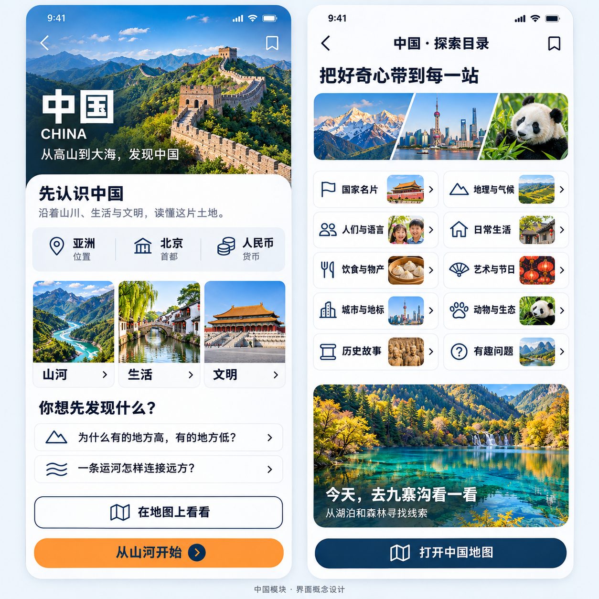
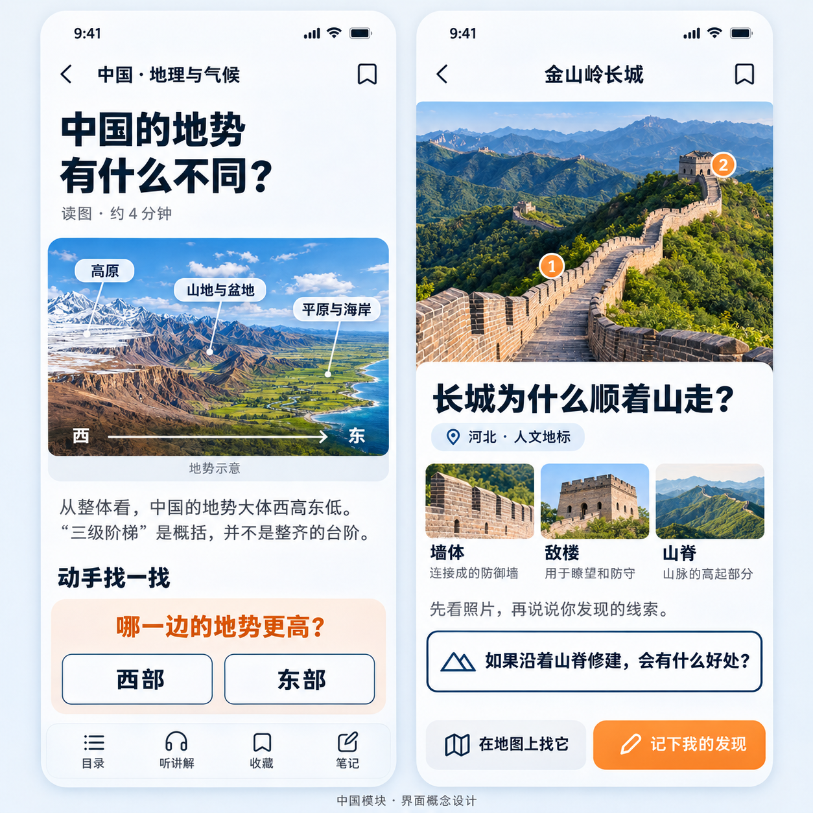
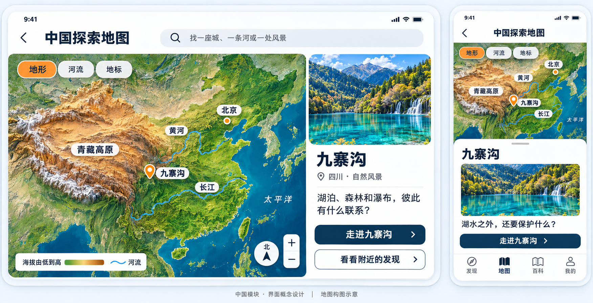
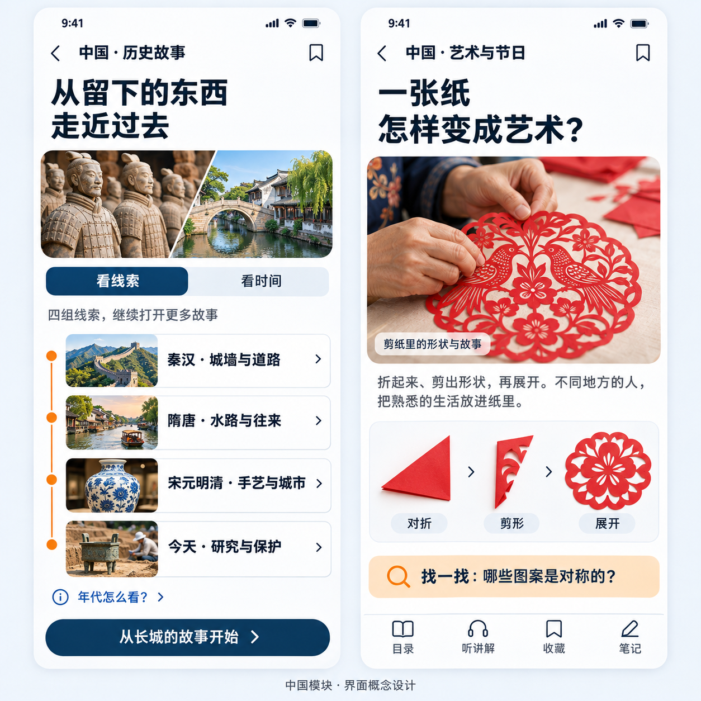
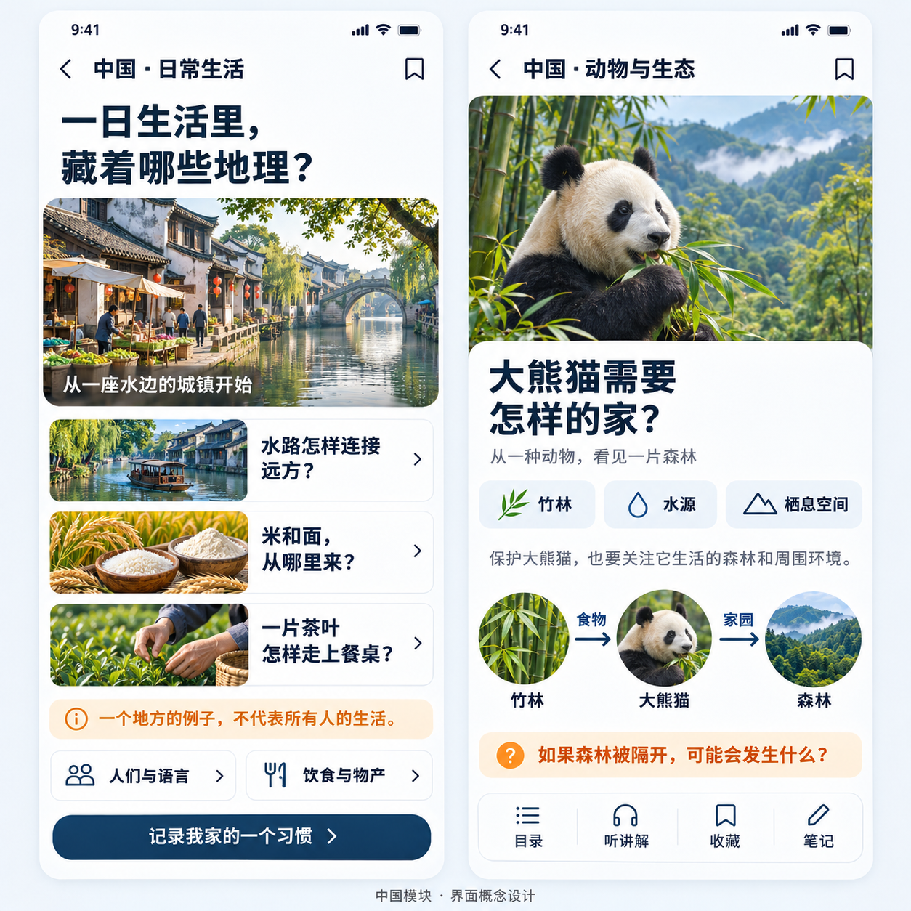
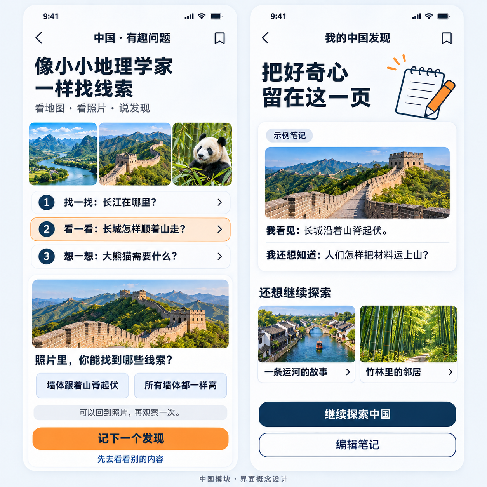

跟着山河、生活与文明，认识一个丰富的中国。为 8 岁孩子设计的国家深度百科。

看见 → 读懂 → 记下发现
从高原、江河走向森林与海岸，理解地势、水和生命怎样相连。
从一条运河、一顿饭、一个地方的生活例子，发现人与环境的联系。
通过建筑、手艺和真实物件寻找证据，把过去与今天连接起来。
点击图片放大 · 保留完整生成原图
大幅长城封面、三条主线、问题入口，以及完整的十栏目检索。

用地势图理解一个概念，在照片中寻找细节，再带着问题回到地图。

地形、河流、地标三种观察方式；平板采用侧栏，手机采用底部地点面板。地图仅为构图示意。

先看留下的物件，再认识时间；从纸张和图案走近一门手艺。

记录具体地方的日常，也从一只动物看见它需要的整个环境。

找位置、看照片、说发现。保存真实的笔记和问题，不用积分或答题解锁内容。
设计规格、内容清单与原稿一起交付